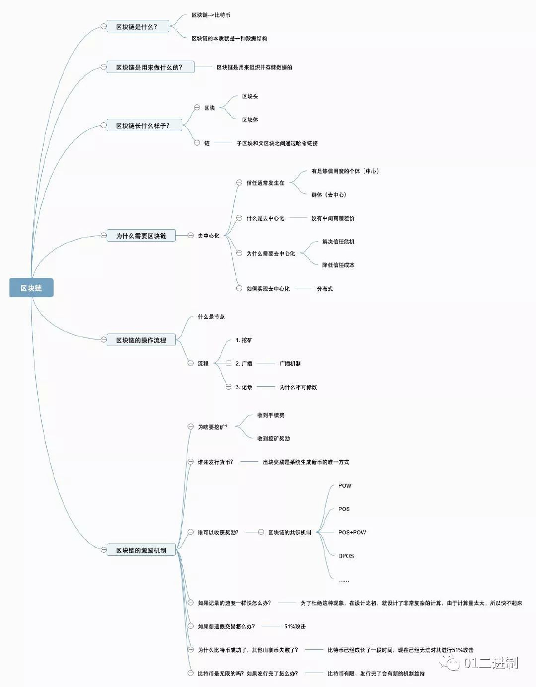
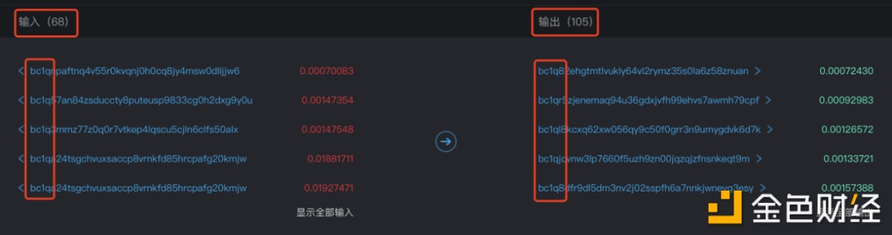

目前当大家单独说到区块链的时候，就是指的区块链技术，是实现了数据公开、透明、可追溯的产品的架构设计方法，算作广义的区块链。而当在具体产品中谈到区块链的时候，可以指类似比特币的数据存储方式，或许是数据库设计，或许是文件形式的设计，这算作狭义的区块链。广义的区块链技术，必须包含点对点网络设计、加密技术应用、分布式算法的实现、数据存储技术的使用等4个方面，其他的可能涉及到分布式存储、机器学习、VR、物联网、大数据等。狭义的区块链仅仅涉及到数据存储技术，数据库或文件操作等。。

一上来看不懂很正常，我刚开始接触区块链的时候也不懂，包括现在还有很多地方需要研究，查的多了也就有了一定的概念。不对的地方还请包容指正
《区块链技术发展现状与展望》一文给出如下定义：
狭义来讲，区块链是一种按照时间顺序将数据区块以链条的方式组合成特定数据结构， 并以密码学方式保证的不可篡改和不可伪造的去中心化共享总账(Decentralized shared ledger)，能够安全存储简单的、有先后关系的、能在系统内验证的数据。 广义的区块链技术则是利用加密链式区块结构来验证与存储数据、利用分布式节点共识算法来生成和更新数据、利用自动化脚本代码(智能合约)来编程和操作数据的一种全新的去中心化基础架构与分布式计算范式。
总的来说，区块链是一个分布式的共享账本和数据库，具有去中心化、不可篡改、全程留痕、可以追溯、集体维护、公开透明等特点。
用一个小故事来理解
就叫它萝卜村吧，之前村长天天在村里转悠，来帮萝卜村的居民互相传达消息，哪家有什么喜事丧事就告诉村长，村长再通知需要来吃席的那个或者那几个村民；但慢慢的村长年事已高，记忆力减退，村民们怕村长犯糊涂忘记了交代的事情，于是想了个主意，一起来帮忙想着，以后谁家有什么喜事白事，就都一起记着，该谁去谁去就行了。
其实村长可以理解为传统的银行，所有的账本信息只有银行自己知道；村民们可以理解为是区块链的节点来存储信息，通常情况下我们认为这是一台具有自主处理能力的主机，每台主机都安装并运行了区块链协议节点软件（可以理解为就是矿机），其中的节点可以分布在全球任何一个位置，通过internet把他们连接在了一起。
全世界无数个矿机对每一笔交易进行验证、记账、存储、维护和传输等，实现了去中心化或者叫分布式记账。这么多节点来帮你记账，想要改变你的账本信息是很难实现的（除非你有能力获取所有节点的权限），所以说具有不可篡改、集体维护、公开透明等特点。
区块链具有匿名性的特征
企鹅号 - 五六财经：
区块链运用密码学技术保证数据传输和访问的安全，账户身份在区块链中是高度加密的。每个账户身份用密码学字符来代替，别人可以了解到这个账户的信息，但是不知道账户所对应的身份。因此区块链中交易双方不会知道对方的任何私人信息，交易在非实名的情况下进行，所以区块链是具有匿名性的。但准确来讲，区块链的匿名性特征是指非实名。做一下区分我们就能明白，匿名指的是没有任何人知道你的身份，不出现任何与个人匹配的身份和信息，非实名指的是你拥有一个虚拟身份，别人了解关于这个虚拟身份的相关信息。区块链属于后者。但是匿名性特征对于数字货币来说却是一把双刃剑，一方面，用户使用数字货币进行交易时，区块链的匿名性特征可以保护用户，不至于泄露用户个人隐私。另一方面，匿名性可能涉及非法交易，进行非法交易的用户也将受到区块链匿名性的保护，执法机构将很难找出罪魁祸首。
国家有关部门近年来不断加大打击网络犯罪的力度，“断卡行动”和“反洗钱法”等一系列组合拳的生效，传统洗钱渠道遭遇沉重打击；犯罪分子逐渐将势头瞄准到了虚拟货币，自区块链行业兴起以来，暗网交易、线上赌博、传销盘、资金盘等上游犯罪活动纷纷“转战链上”，利用比特币等虚拟货币进行洗钱的方式更为隐蔽，极大提高了反洗钱难度，给社会稳定、金融安全和司法公正造成严重威胁。
总体来说虚拟货币的洗钱过程：
参考：浅析利用虚拟货币洗钱 金色财经 (jinse.com)
第一阶段：放置。犯罪分子购买虚拟货币，将非法资金注入所要“清洗”的渠道中。实际案件中可能会结合其他手法混淆虚拟货币的来源。这个阶段其实在很多洗钱手法中都非常常见，只要是犯罪分子把赃款打入第三方平台/商户进行洗钱的这个过程都可以叫做放置。
第二阶段：培植阶段。洗钱者利用虚拟货币的匿名性进行多层次、复杂化的交易，从而掩饰犯罪所得的性质和来源。
第三阶段：融合阶段。在不断转移和洗白非法所得后，犯罪分子持有的虚拟货币已基本不受限制并且相对安全，此时他们只需将所有被洗过的虚拟货币整合到某一地址上最后提现，这样就基本上完成洗钱操作了。
新型手法：
1、利用匿名币洗钱
1 | 匿名币： |
匿名币使用了环签名证明和零知识证明等技术手段，目的就是让使用者的交易记录不可追踪。犯罪分子会把赃款在交易所兑换成匿名币之后再进行后续的交易操作，这样执法机关也很难进行下一步追查。
相关技术的了解可以参考：匿名币 - 知乎 (zhihu.com)
2、usdt虚拟币跑分平台
跑分这个概念我还是接触比较早的，这篇文章的介绍很简单明了(1 封私信 / 22 条消息) 跑分是什么？ 听说很赚钱？ - 知乎 (zhihu.com)
虚拟货币跑分，总的来说就是将犯罪所得的巨额赃款转到区块链上，然后经过区块链上的大量用户分散转发，逃避公安机关的追捕，最后扣去少量抽成后再统一汇总到犯罪分子的某一地址账号。
听起来和传统意义的跑分相差不大，但区块链上的跑分更具隐蔽性、和复杂性。需要根据最开始的犯罪嫌疑人把赃款打进去的地址账号开始，再查他转给的所有参与者的信息，一层一层的查下去找到最后汇总的地址账号。

3、混币平台
很多混币平台的官方都是打着增加交易隐私性的旗号，但是如果要提高自己的交易隐私性，就要多付一些手续费来购买混币服务，混币服务是用来隐藏交易路径和隐藏参与者身份的服务，很多人是不愿意的，所以这些平台实际上更多的还是成为了犯罪分子洗钱的媒介。
混币平台分为中心化和去中心化的两种运营模式。
中心化混币平台的运营模式：
在网上有流传这么一种猜想，平台在接收到犯罪分子的赃款后会先从洗好的干净池子中打一笔扣除手续费的资金，因为资金数额已经不一样了，且接收地址也不一样，要关联起两笔资金其实是有一定难度的。
之后犯罪分子打入的这笔赃款会经过一段时间的沉淀后与后续打入的资金进行混洗，具体的混洗方法平台并没有公布，混洗之后的资金会被转移到资金池中进行下一步使用。
去中心化混币平台：
主要是使用一种叫做CoinJoin的机制和UTXO模式
FBI 这些机构每年花几百万美金，雇佣 Chainalysis 来解决混币在资金追捕上的麻烦。
混币器作用的理解：
UTXO模式：可以被理解为一张有着一定面值的纸币，当甲要把一笔比特币转给乙时，这个过程是把甲的钱包地址中之前的一个 UTXO，用私钥进行签名，发送到乙的地址。这个过程是一个新的交易，而乙得到的是一个新的 UTXO。就像我们平常使用纸币一样，比特币交易也会产生找零，当甲的余额大于他想要发送给乙的额度时，就会产生找零，这笔找零会再发送到甲的地址上，但是这笔交易在外人看来是没办法区分哪个地址是甲或乙的。
由于比特币 UTXO 的设计机制，同笔交易可以有多个输入和输出。这意味着，可以构建这样一种交易，让数百个交易发起者（地址），同时向数百个交易接受者（地址），转一定数额比特币。这时，监视者没有办法通过这笔交易来证明，这几百个地址的控制者间的存在强联系，他们基本上互相不认识，只是恰好同一时间发起交易而已。
正如下图从知帆科技Chaindigg区块链浏览器截取的CoinJoin交易记录显示，在同一笔交易记录中左边的输入地址有68个，输出地址更是达到105个之多，并且两边的比特币地址格式都是一样的，只靠人工追踪是很难重新建立输入输出地址的关系的。
